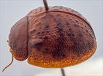
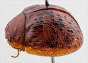
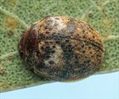
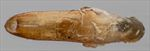
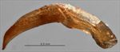
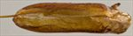
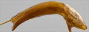
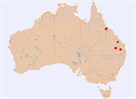

Click on images to enlarge
{kind=link}

Male, Mingela, North Queensland
{kind=link}

Male, Bunya Mts, S.E. Queensland
{kind=link}

Female, Gurulmundi, S.E. Queensland
{kind=link}

Aedeagus, dorsal view (Mingela, North Queensland)
{kind=link}

Aedeagus, lateral view (Mingela, North Queensland)
{kind=link}

Aedeagus, dorsal view (Bunya Mts, S.E. Queensland)
{kind=link}

Aedeagus, lateral view (Bunya Mts, S.E. Queensland)
{kind=link}

Distribution
Name
Trachymela sp. Ta72
Reference specimen
2000-177a, Mingela, Northern Queensland.
Adult Description
Length: ♂ 3.8–4.7 mm (n=8), ♀ 4.2–5.1 mm (n=9).
Colouration:
- Head: mid-brown to dark-brown, sometimes with vaguely-defined fractionally darker patches adjacent to eyes, labrum light-brown, mandibles black-tipped; antennomeres 1–8 straw-brown, antennomeres 9–11 similar but often with distal extremes fractionally darker.
- Pronotum: uniformly brown, concolorous with head, rarely with indistinct and very slightly darker patches.
- Scutellum: brown, concolorous with pronotum, usually broadly edged in a slightly darker shade.
- Elytra: brown, concolorous with or slightly lighter shade than pronotum, punctures are concolorous with or of a slightly darker shade, a number of small to moderate sized darker brown (less commonly, black) elevated verrucae always present, scattered unevenly over elytral surface but absent from a transversely located central depression and tending to be denser in a band just posterior to the depression, humeral callus darker-brown or black.
- Venter & Legs: head mid- to dark-brown (gula black in southern specimens), thoracic ventrites mid- to dark brown often with edges darker, abdominal ventrites and legs of a lighter brown shade, inside surface of elytral epipleura brown.
- Cuticular Wax: brown wax is relatively evenly or slightly unevenly distributed over the dorsal surface, a small or moderate-sized patch of lighter-coloured, greyish wax may be present in the antero-median depression.
Morphology:
- Head: strong, fine (pd ≈ 1–1.5 × ef) and evenly and densely distributed punctures. Antennae compact (AL/BL: ♂ 38–41%, ♀ 32–33%).
- Pronotum: surface smooth and nitid, evenly curved transversely, surface sometimes slightly uneven, foveal depression absent, or if present, very shallow, a small raised, round area situated at outside centre edge of depression, puncturation clearly impressed, evenly distributed and quite dense in discal area, becoming considerably coarser at lateral margins. Front margins join lateral margins in a smoothly rounded right-angle, with lateral margin almost straight for a short segment, then curving smoothly and gradually towards rear margin.
- Scutellum: slightly uneven, with two or more punctures usually present.
- Elytra: broad, very small, strongly convex (H/BL = 45–52%), highest point is in front of middle of elytral margin; quite strongly and smoothly curved over full length viewed laterally, pitted with large and prominent punctures, with much smaller punctures scattered sparingly on the interstices. A broad but shallow transverse depression of the surface is situated a little in front of middle, raised verrucae of moderate size, some with fine punctures at the centre, are present over much of the surface, but are absent from the transverse depression and tend to have a higher concentration along a band just posterior to it. Verrucae do not line up in obvious longitudinal rows. Vertical extension of epipleurae considerable (HCE/PW = 0.42–0.45).
- Venter: prosternal process not much wider at rear than at front, closed anteriorly, lightly scattered with long setae throughout. Anterior and median trochanters with a single long seta each; inner edge of posterior of epipleura lacking setae.
Male Genitalia (Aedeagus):
- Dimensions: moderately long (LPE/BL = 30–36%).
- Dorsal view: narrow lanceolate, broadest at base, then very gradually and almost evenly tapering towards apex (sometimes parallel-sided for a short length), with the taper increasing slightly but noticeably from just behind rear of ostium to a sharply pointed apex, dorsolateral channel weakly defined.
- Lateral view: almost evenly curved throughout its length, with the tip almost imperceptibly recurved, flagellum thin.
Immature Stages
Unknown.
Similar species
- Ta33: this species is of very similar overall appearance but is usually larger (there is only a small overlap in the size distributions). Southern specimens of Ta72 may have a black gula, while the ventral surface of the head of Ta33 is always a uniform brown. Ta33 has 3–6 setae on each of the trochanters, while there is only one present in Ta72. The colouring of cuticular wax is different in the two species: in Ta72 it is usually a single shade (or at most has a small patch of grey in the antero-median depression), while Ta33 has a contrasting lighter-coloured shade in both the antero-median depression and the posterior region of elytra.
- Ta11: these are very similar in size to Ta72. They can usually be distinguished by the lack of a black gula, and the almost invariable presence of black markings on either side of pronotal disc and the black or dark-brown, flattish area straddling the elytral summit. The elytral verrucae of Ta11 also tend to be less well defined than those of Ta72.
Notes
- Taxonomy: A very small species with a lanceolate aedeagus.
- Host Associations: All individuals of Ta72 with identified host have been collected from Eucalyptus species in series Adnataria (subgenus Symphyomyrtus). These records are mostly from ironbarks, including E. crebra and E. fibrosa, and just 2 records from boxes, including one from E. microcarpa.
Copyright © 2026. All rights reserved.